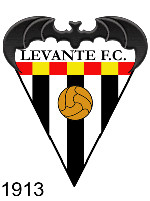
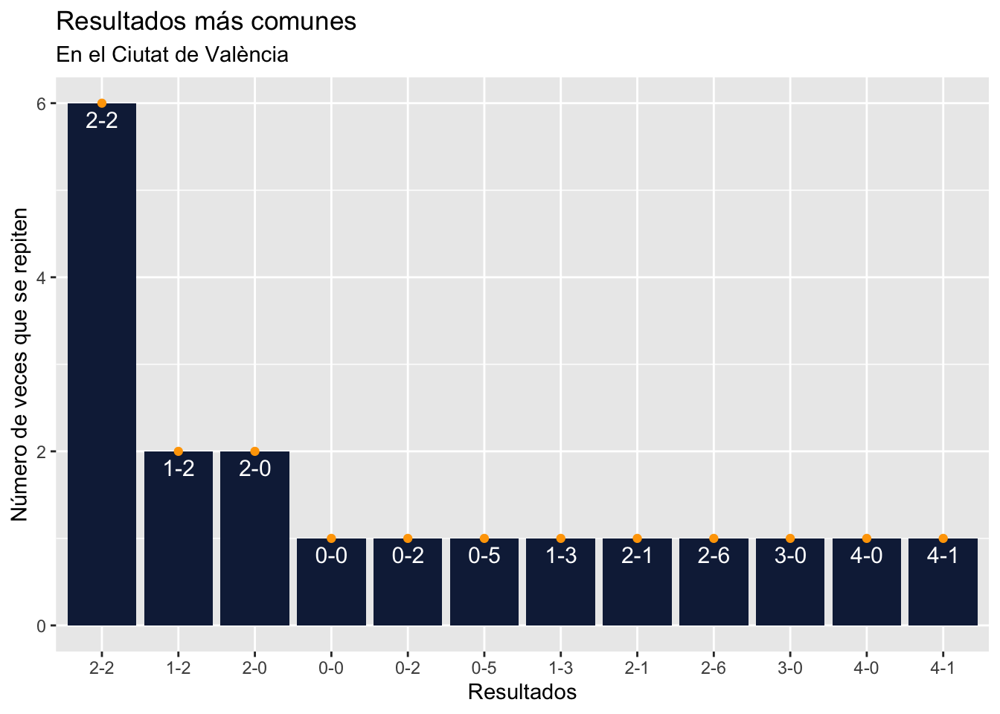
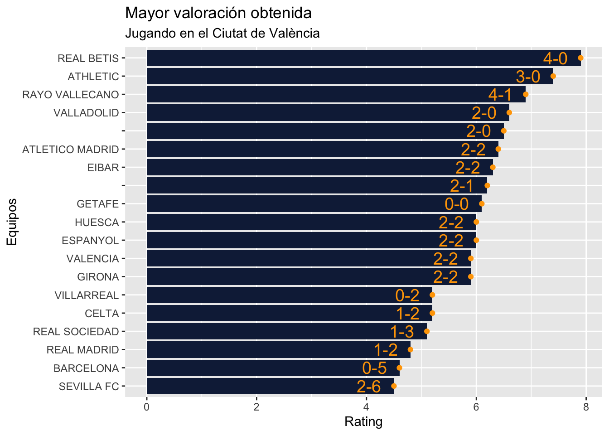
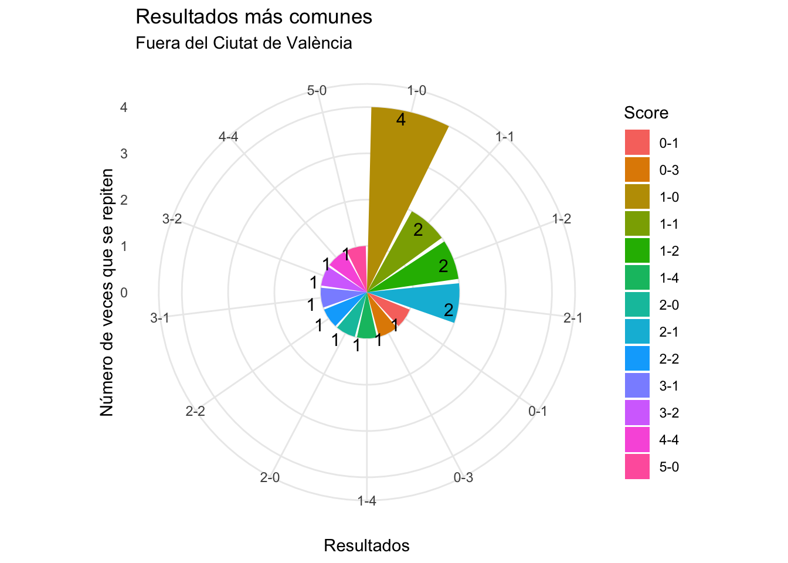
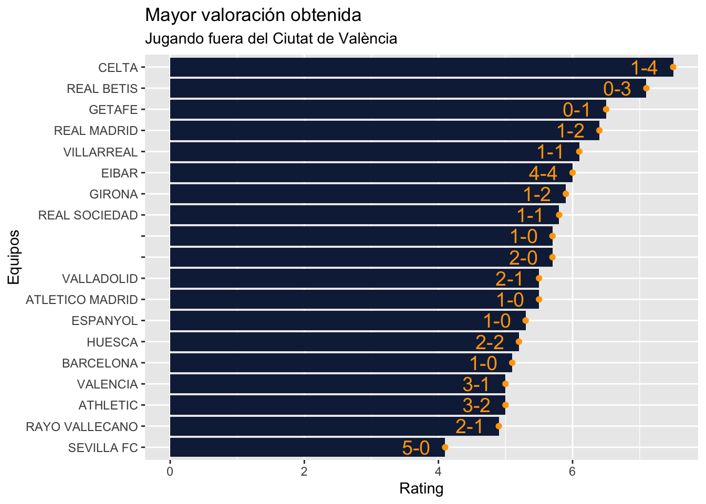
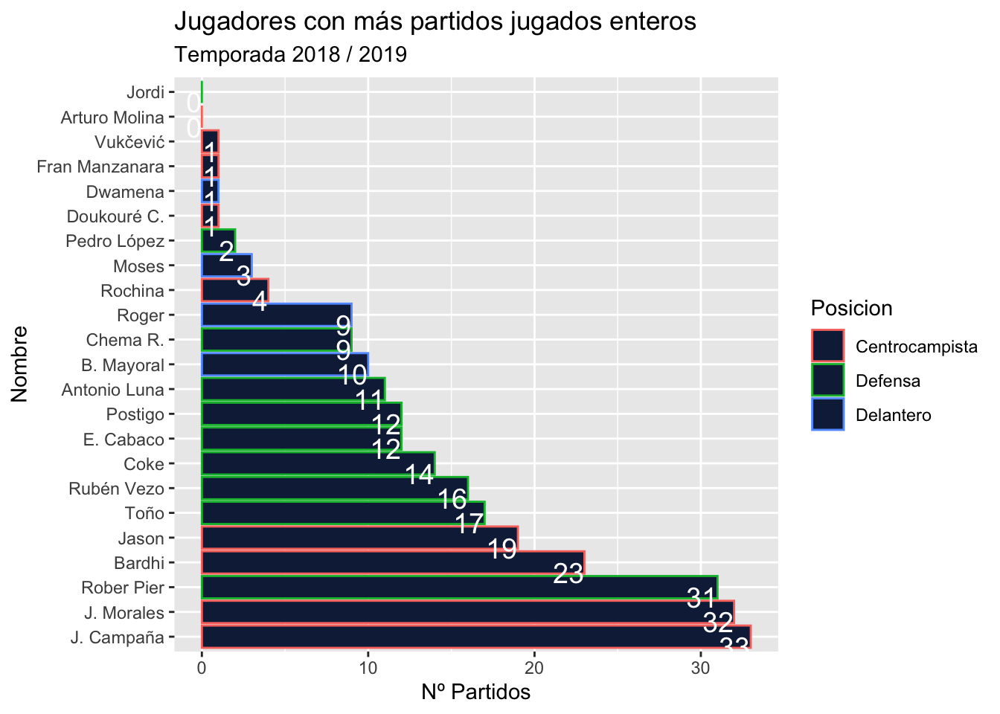
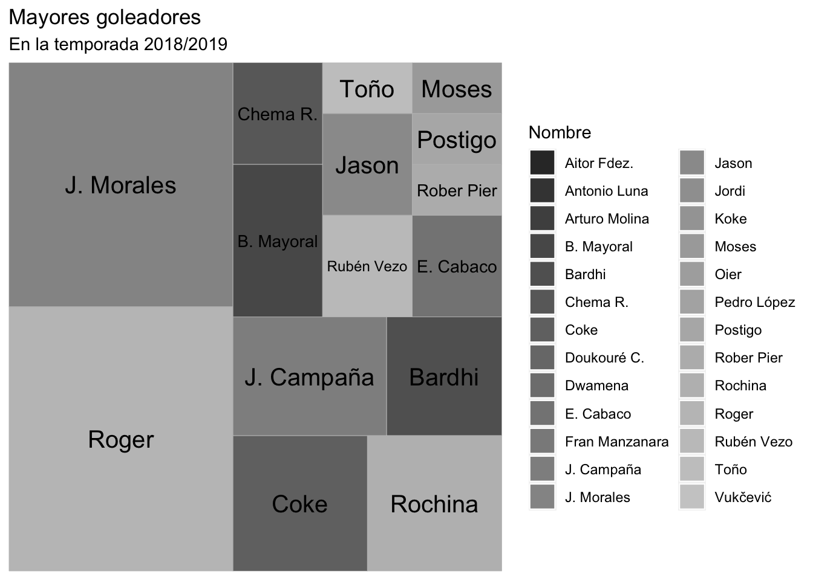
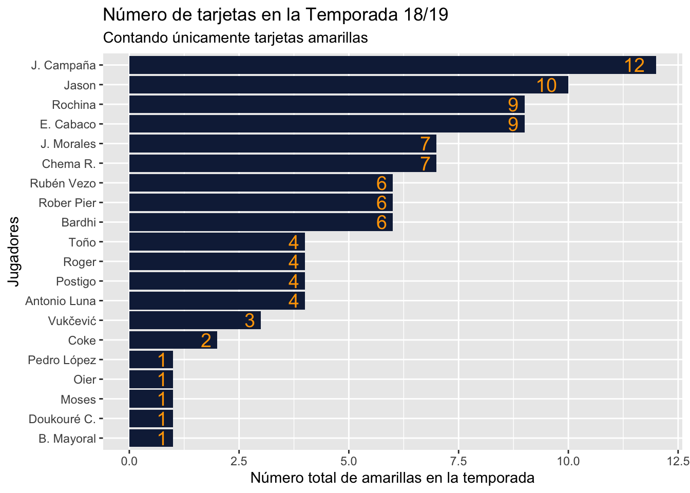

Introducción
EL siguiente trabajo se estructurará de la siguiente forma:
En primer lugar, realizaremos una breve explicación de los acontecimientos de la temporada 2018/2019 junto a la exposición de la base de datos utilizada, además de los paquetes utilizados para crear todo el trabajo.
En segundo lugar, se procederá a analizar los partidos centrándose en el Levante UD, utilizando como principales variables a estudiar los resultados obtenidos, tanto dentro, como fuera de casa, así como las valoraciones obtenidas en todos los partidos.
En tercer lugar, se analizarán los jugadores del Levante UD por posiciones y variables que hemos considerado fundamentales, así como la relevancia que han tenido para la consecución de los objetivos del club.
En último lugar, concluiremos con una opinión sobre la temporada realizada por el equipo granota y la efetctividad que ha tenido el entrenador y los jugadores a lo largo de los partidos.
Datos del trabajo
La base de datos que se ha utilizado para crear el trabajo procede en su 100% de la página web de base de datos Kaggle y más concretamente cada una de ellas: Partidos, junto a Jugadores.
Código R utilizado
Código
#Estas son los distintos paquetes utilizados:
library(readr)
library(gapminder)
library(gganimate)
library(stats)
library(plotly)
library(ggplot2)
library(tidyverse)
library(treemap)
library(treemapify)
library(magick)
#Mediante el siguiente código importamos los datos necesarios:
Jugadores <- read_csv("Datos/laliga_player_stats_spanish.csv")
Partidos <- read_csv("Datos/laliga2018.csv")Resumen general temporada 2018/19
La Liga, también conocida como la Liga Santander, es un torneo futbolístico organizado por la Liga de Fútbol Profesional, en el que equipos de todo el país se enfrentan durante una serie de jornadas para alzarse con el trofeo del campeón a finales de temporada. Dentro de la temporada situada entre los años 2018 y 2019, la 88ª edición del torneo en toda su historia, se caracterizó por hechos singulares como la aparición de la tecnología VAR por primera vez, o la aplicación del calendario asimétrico, nunca antes utilizado. Observamos por parte de la Comunidad Autónoma de Madrid, la presencia de 5 equipos inscritos en esta competición, lo que causó que cada 4 partidos se viviese como mínimo un derbi madrileño, lo que supone un gran movimiento de aficionados y espectadores debido a la gran rivalidad vista en todos los derbis, de todas las Comunidades Autónomas hasta el momento.
En la clasificación de esta temporada, nos encontramos con la victoria del campeonato por parte del FC Barcelona (87 ptos), seguido de equipos como el Atlético de Madrid (76 ptos), el Real Madrid (68 ptos) y finalizando los puestos de Champions con el Valencia CF (61 ptos). En cuanto a los colistas que descendieron ese año, nos encontramos con el Girona (37 ptos), el Huesca (33 ptos) y el Rayo Vallecano (igualado a puntos con el Celta de Vigo y el Real Valladolid con 41 ptos, pero con una diferencia de goles menor, -29 goles).
Pero este trabajo no se centra en La Liga Santander en su conjunto, sino que utilizando las herramientas como RStudio y los datos proporcionados por el dataset escogido y mencionado anteriormente, procederemos a realizar un análisis del equipo Levante Unión Deportiva en su conjunto, mediante las distintas variables como goles, asistencias, minutos, partidos, ratings, tarjetas… Estructurándose principalmente en una breve introducción, el análisis de los partidos, el análisis de los distintos jugadores y finalizando con una conclusión sobre su planteamiento, desarrollo y cierre de la temporada.
El Levante UD es un club de fútbol, cuya sede reside en la ciudad de Valencia, se fundó en el año 1909, fusionándose el Levante Fútbol Club y el Gimnástico Fútbol Club 30 años después y adquiriendo el nombre con el que hoy en día conocemos a este club. Durante la temporada 2018/2019, en la que el club se supo mantener durante la media tabla la gran mayoría del campeonato y logrando finalmente el objetivo del mantenimiento en el campeonato y no descender a Segunda División, el presidente fue Quico Catalán, manteniéndose hasta día de hoy (26 de diciembre de 2022) y con Paco López al frente de la plantilla de 26 jugadores.
Código
#gráfico evolución del escudo
logo1913 <- image_read("./imagenes/1913.gif") %>% image_annotate(., "1913", size = 40, gravity = "southwest", color = "black")
logo_transición <- image_read("./imagenes/transición logo.png") %>%
image_scale(.,"800") %>% image_annotate(., "1939", size = 40, gravity = "southwest", color = "black")
logo1976 <- image_read("./imagenes/1976.jpg") %>%
image_scale(.,"500") %>% image_annotate(., "1976", size = 40, gravity = "southwest", color = "black")
logo2022 <- image_read("./imagenes/2022.png") %>% image_annotate(., "2022", size = 40, gravity = "southwest", color = "black")
evolucion_logo <- c(logo1913,logo_transición,logo1976,logo2022)
image_animate(image_scale(evolucion_logo),fps = 0.5)
Análisis de los partidos
En cuanto a los partidos, observamos un Levante que, durante todos estos meses desde septiembre a junio, no se fortaleció en el Ciutat de València, su estadio, ya que los resultados nos muestran una clara tendencia al empate, con 7 partidos de los 19 que se jugaron en los que el conjunto granota empató contra su rival; además de las 7 derrotas que sufrieron en este estadio. Lo que nos deja un total de 5 victorias, en los 19 partidos que se disputaron, donde el equipo consiguió sumar la cifra de 3 puntos en cada uno.
Código
Resultados_mas_comunes_casa <- Partidos %>% filter(`Home Team` == "LEVANTE") %>%
count(`Score`)
Grafico_resultados_casa <-
ggplot(Resultados_mas_comunes_casa) +
aes(x = reorder(Score, desc(n)), y = n) +
geom_col(fill = "#112446") +
labs(
x = "Resultados",
y = "Número de veces que se repiten",
title = "Resultados más comunes",
subtitle = "En el Ciutat de València"
) + geom_point(color = "orange") +
geom_text(aes(label=Score), vjust=1.5,hjust=0.49, color= "White",
position = position_dodge(0.1), size=4.0)
Grafico_resultados_casa
Es por ello, que la cifra media de la valoración obtenida como Equipo Local se sitúa entorno a la media de 6 puntos sobre 10 en los partidos, destacando cifras como el 7,9 logrado ante el Real Betis Balompié con un marcador a favor del Levante de 4-0; o destacando como la peor nota el 4,5 obtenido en el partido en casa ante el Sevilla FC donde perdieron con un resultado final abrumador de 2 a 6, a favor del Sevilla; yo personalmente como aficionado del Levante lo viví en persona y fue uno de los momentos más duros para todos los espectadores que estábamos allí.
Código
mayor_rating <- Partidos %>% filter(`Home Team` == "LEVANTE") %>%
slice_max(`Home Team Rating` , n=19)
grafico_mayor_rating_casa <- ggplot(mayor_rating) +
aes((x = reorder(`Away Team`,`Home Team Rating`)), y = `Home Team Rating`) + geom_col(fill = "#112446") +
labs(
x = "Equipos",
y = "Rating",
title = "Mayor valoración obtenida",
subtitle = "Jugando en el Ciutat de València"
) + geom_point(color = "orange") +
geom_text(aes(label=Score), vjust=0.49,hjust=1.5, color= "orange",
position = position_dodge(0.1), size=5.0) +
coord_flip()
grafico_mayor_rating_casa
Situación diferente ocurre cuando nos posicionamos en un Levante UD visitante durante esta temporada, ya que el resultado más común fue de derrota 1-0 frente a sus rivales pero con un mayor reparto de los resultados obtenidos en los encuentros, destacando desde el 0-1 a favor hasta el 5-0 en contra. Aquí fue donde el Levante pudo obtener la gran mayoría de puntos para salvar su permanencia en la categoría, ya que en casa la cantidad de puntos perdida fue mucho mayor.
Código
#Gráfico de los resultados más comunes fuera de casa
Resultados_mas_comunes_fuera <- Partidos %>% filter(`Away Team` == "LEVANTE") %>%
count(`Score`)
Grafico_resultados_fuera <- ggplot(Resultados_mas_comunes_fuera) +
aes(x = reorder(Score,desc(n)), y = n, fill = Score) +
geom_col() +
scale_fill_hue(direction = 1) +
theme_minimal() +
coord_polar() +
labs(
x = "Resultados",
y = "Número de veces que se repiten",
title = "Resultados más comunes",
subtitle = "Fuera del Ciutat de València"
) + geom_text(aes(label=n), vjust=0.99,hjust=1.5, color= "black",
position = position_dodge(0.1), size=4.0)
Grafico_resultados_fuera
Dentro de la valoración obtenida por el equipo, tras cada partido como visitante observamos una media entorno a 5,5 puntos sobre 10, pero con un acontecimiento que no encontramos anteriormente en el rating como local, y es la valoración de 4,1 frente a la derrota ante el Sevilla FC con un contundente 5 a 0 en contra del equipo valenciano, que supone la peor valoración obtenida durante todo el transcurso del campeonato. De acuerdo, con este resultado y el obtenido anteriormente, tanto a la ida como a la vuelta, el Sevilla FC fue el rival que castigó con mayor dureza al Levante con unos resultados muy negativos y que generaron gran revuelo entre la prensa levantinista que se fueron disipando con el paso del tiempo.
Código
#gráfico con mayor rating jugando fuera de casa
mayor_rating_fuera <- Partidos %>% filter(`Away Team` == "LEVANTE") %>%
slice_max(`Home Team Rating` , n=19)
grafico_mayor_rating_fuera <- ggplot(mayor_rating_fuera) +
aes(x = reorder (`Home Team`,`Away Team Rating`), y = `Away Team Rating`) + geom_col(fill = "#112446") +
labs(
x = "Equipos",
y = "Rating",
title = "Mayor valoración obtenida",
subtitle = "Jugando fuera del Ciutat de València"
) + geom_point(color = "orange") +
geom_text(aes(label=Score), vjust=0.49,hjust=1.5, color= "orange",
position = position_dodge(0.1), size=5.0) +
coord_flip()
grafico_mayor_rating_fuera
Análisis de los jugadores
En cuanto a los jugadores, esta temporada nos ofrece una plantilla de 26 jugadores liderados por Paco López, probablemente uno de los entrenadores más emblemáticos del club, y cuyo análisis lo dividiremos por posiciones, comenzando con un análisis de los delanteros, seguido de los mediocampistas y finalizando con los defensas. La cantidad de minutos jugada por los distintos jugadores es muy dispersa, analizando los 90 minutos de partidos enteros jugados, sin contar los minutos de descuento finales que se añaden a final de cada partido a decisión personal del árbitro, con mediocentros como Jose Campaña o centrales como Rober Pier que jugaron más de 30 partidos en los 38 posibles. Hay una clara diferencia entre los partidos jugados por los centrocampistas o defensas y en los delanteros, ya que el juego del Levante al basarse en una presión muy intensa durante gran parte del juego causaba que los delanteros físicamente no pudiesen finalizar el partido debido al agotamiento y tenían que ser sustituidos por otros suplentes. En cambio, tenemos que la gran mayoría de defensas sumaron una gran cantidad de partidos enteros jugados en conjunto, lo que evidencia el menor esfuerzo físico de esta posición en comparación con las otras, y por otro lado, la fantástica gestión del entrenador de los jugadores en el partido. En cuanto a los siguientes gráficos, hemos querido implementar una tabal interactiva realizada con el DT package, con la finalidad de mostrar a todos los jugadores de la plantilla y sus respectivas estadísticas; para posteriormente introducir otro gráfico distinto, creado mediante ggplot2, para observar los partidos enteros jugados por todos ellos.
Código
Código
#Gáfico de los jugadores con más partidos enteros jugados
Jugadores_mas_minutos <- Jugadores %>% filter(Equipo == "Levante UD") %>% slice_max(`Partidos jugados enteros` , n=30) %>% filter(`Posicion` %in% c("Defensa","Centrocampista","Delantero"))
Grafico_jugadores_mas_partidos_enteros <- ggplot(Jugadores_mas_minutos) +
aes(x = reorder(Nombre, desc(`Partidos jugados enteros`)), y = `Partidos jugados enteros` , colour = Posicion) +
geom_col(fill = "#112446") +
labs(x = "Nombre", y = "Nº Partidos", title = "Jugadores con más partidos jugados enteros",
subtitle = "Temporada 2018 / 2019") +
coord_flip() + geom_text(aes(label=`Partidos jugados enteros`), vjust=1,hjust=1, color= "White",
position = position_dodge(0.1), size=5.0
)
Grafico_jugadores_mas_partidos_enteros 
Los delanteros hemos querido analizarlos principalmente por la cantidad de goles conseguida por éstos, y el consiguiente reparto de goles entre todos los jugadores, liderando la lista Roger y por detrás José Morales, capitán del equipo y líder indiscutible del vestuario siendo apodado por toda la afición como “el Comandante”, con una cantidad de 13 y 12 goles respectivamente y siendo fundamentales para la consecución del objetivo del vestuario. Por otro lado, el reparto de goles del equipo se centró fundamentalmente en los centrocampistas con nombres como Coke o Campaña y otros delanteros, los cuales no tuvieron la misma efectividad que los dos mencionados al principio del apartado, como Borja Mayoral, cedido del Real Madrid o Bardhi. Queremos destacar una aclaración, contamos a José Morales como delantero, aunque en otros gráficos lo sitúe como centrocampista debido a su labor como mediocentro ofensivo en el campo, y es que a pesar de pertenecer a la línea media del equipo, su función se centraba principalmente en el ataque y desborde por las bandas con su gran velocidad, siendo uno de los jugadores más rápidos de toda la categoría.
Código
mayores_goleadores <- Jugadores %>% filter(Equipo == "Levante UD") %>% select(Nombre,`Goles marcados`)
grafico_goleadores <- ggplot(mayores_goleadores) +
aes(area = `Goles marcados`,fill = Nombre, label = Nombre) +
geom_treemap() +
geom_treemap_text(colour = "black",
place = "centre",
size = 15) +
scale_fill_grey() +
labs(title = "Mayores goleadores",
subtitle = "En la temporada 2018/2019")
grafico_goleadores
Los centrocampistas, al ser su función principal ser el corazón táctico del equipo y conectar las distintas líneas de jugadores defensivas y ofensivas, hemos querido realizar su análisis a través de las distintas asistencias realizadas durante la temporada, y el consiguiente reparto total de asistencias entre toda la plantilla. Jose Campaña destaca sobre el resto de compañeros, con una escandalosa cifra de 9 asistencias él solo, seguido de compañeros del medio campo como Rochina o Jason con 5 asistencias cada uno de ellos. Gracias al gráfico, podemos visualizar como el rol de “pasador” de los centrocampistas está muy marcado y es muy superior al resto de posiciones, ya que la diferencia con los defensas, por ejemplo, cuyo rol es “defensivo” es un gran número de asistencias entre el mayor defensa asistente y Jose Campaña. Esto también nos da información sobre el juego llevado a cabo por el equipo, con una clara intención de mantener la bola en las líneas del medio campo y un rápido despliegue de la línea de ataque, cuya labor son los goles y ello ha quedado demostrado anteriormente.
Código
Asistencias_levante <- Jugadores %>% filter(Equipo == "Levante UD") %>%
slice_max(`Asistencias de gol` , n=10)
Grafico_asistencia_posicion <-
ggplot(Asistencias_levante) +
aes(x = Nombre, y = `Asistencias de gol`, colour = Posicion) +
geom_col(fill = "#112446") +
scale_color_hue(direction = 1) +
labs(
x = "Jugadores",
y = "Asistencias",
title = "Número de asistencias",
subtitle = "Según la posición jugada"
) +
theme_minimal() +
facet_grid(rows = vars(Posicion), scales = "free_y") + coord_flip()
ggplotly(Grafico_asistencia_posicion)En cuanto a los defensas, cuya estructura durante la gran mayoría de partidos según la decisión de entrenador fue la línea de 2 centrales y 2 laterales, cambiando en ocasiones a una línea de 5 defensas, con 3 centrales y dos carrileros, o línea de 3, cuando en algún momento en determinados partidos Paco López lo veía oportuno. Hemos querido analizarlos de una forma distinta, a través de las tarjetas amarillas obtenidas en la totalidad del campeonato, ya que en infinidad de ocasiones los defensas tienen que recurrir a realizar faltas para poder cortar jugadas de peligro de los rivales y que ello genera un gran número de tarjetas amarillas, o rojas en casos más extremos, hacia estos jugadores. Pero según los datos obtenidos, la media de tarjetas para los defensas se encuentra entorno a 5, siendo muy bajas en comparación con centrocampistas como Campaña, líder en tarjetas amarillas con una cifra total de 12, o Jason, segundo líder indiscutible con una cantidad total de 10 tarjetas. Estos datos nos permiten realizar dos interpretaciones, por un lado, la gran habilidad de los defensas para poder parar el juego de los rivales sin la necesidad de obtener una amarilla por esa acción, y la segunda es la elevada participación defensiva de ciertos jugadores como Campaña o Rochina, cuya localización natuaral es el centro del campo.
Código
#Defensas con mayor número de tarjetas amarillas
mayores_tarjetas <- Jugadores %>% filter(Equipo == "Levante UD") %>% slice_max(`Tarjetas amarillas`,n=20)
grafico_mayores_tarjetas <- ggplot(mayores_tarjetas) +
aes(x = reorder(Nombre, `Tarjetas amarillas`), y = `Tarjetas amarillas`) +
geom_col(fill = "#112446") +
labs(
x = "Jugadores",
y = "Número total de amarillas en la temporada",
title = "Número de tarjetas en la Temporada 18/19",
subtitle = "Contando únicamente tarjetas amarillas"
) + coord_flip() +
geom_text(aes(label=`Tarjetas amarillas`), vjust=0.49,hjust=1.5, color= "orange",
position = position_dodge(0.1), size=5.0)
grafico_mayores_tarjetas
Conclusión final sobre la temporada
Por último, finalizaremos con una conclusión de la temporada 2018/2019 del Levante. El resultado final obtenido por el equipo granota cumplió con las expectativas de gran parte de los aficionados, obteniendo la posición número 15 del campeonato, por detrás del Villareal y por delante del Valladolid, pero con un final de temporada extremadamente angustioso para la gran mayoría de seguidores, ya que se quedaron a 3 puntos del descenso y tan solo en las últimas jornadas se alejaron de los puestos de ascenso con dos victorias consecutivas en la jornada 36 y 37, y un empate en la jornada final. A pesar del resultado final, para muchos demasiado apurado, destacamos varios jugadores de la plantilla según los datos analizados anteriormente, sin los cuales no se podría haber logrado ganar 11 partidos o empatar otros 11, como José Morales, José Campaña, Roger, Postigo o Rober Pier en el aspecto defensivo. Y con todo ello, el Levante UD se dispondría a fortalecer su equipo tras las salidas de ese verano, manteniendo la permanencia en la categoría líder nacional hasta la fatídica temporada 2021/2022 en la que tras sumar más de 30 jornadas sin conocer la victoria, el conjunto levantinista descendería para el siguiente y actual año luchar por el ascenso directo y la vuelta a la categoría que le pertenece.
Bibliografía
Como bien hemos mencionado en el apartado de los datos obtenidos, estas son las principales fuentes de información que hemos utilizado:
Kaggle , y para obtener cada una de las dos fuentes de datos: Partidos y Jugadores
Para las dudas que han surgido a lo largo del proceso de elaboración, se ha utilizado Rpubs y como no podía faltar, la propia web del profesor.